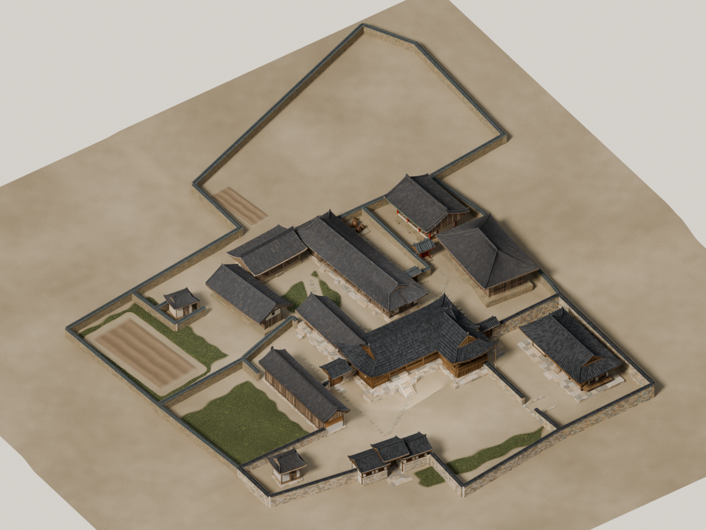
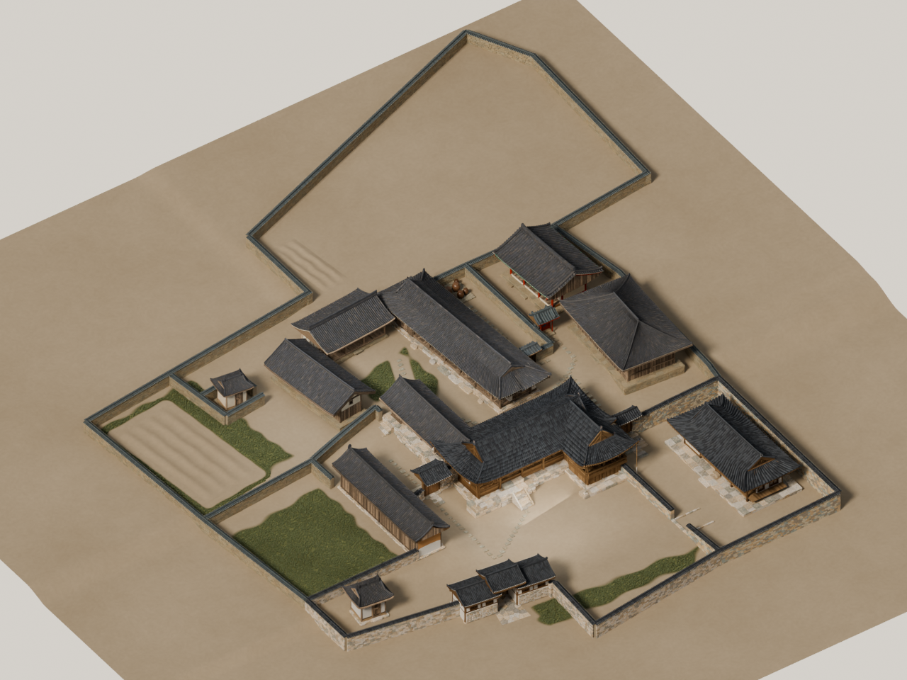
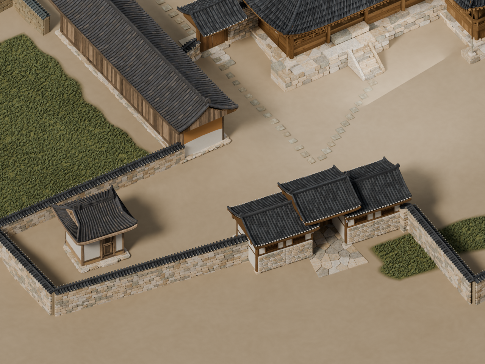
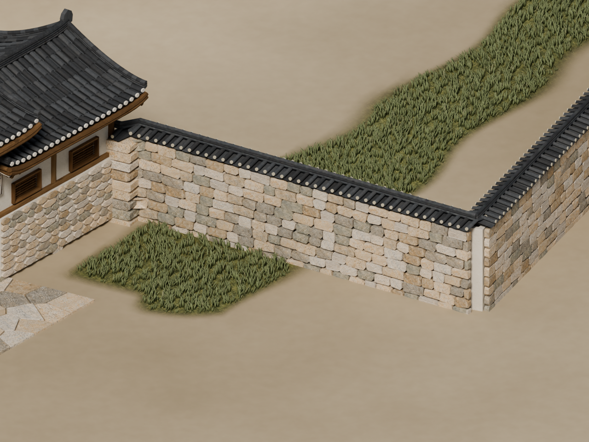
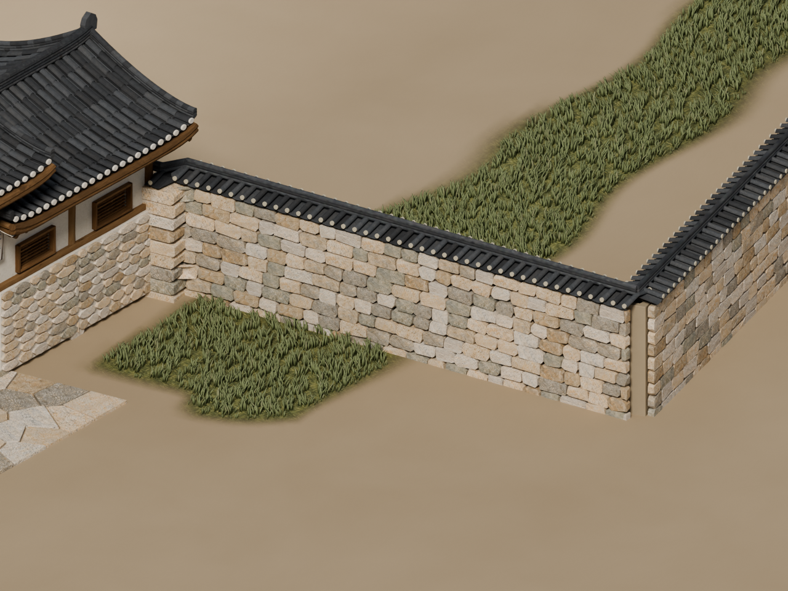

일두고택 · 담장과 흙마당 재질 비교
같은 원본 R12 형상·카메라·조명·색 관리에서 재질만 비교합니다. 검토 후보이며 새로 만든 세 문은 이 단지에 합치지 않았습니다. 실제 앱에 적용한 화면도 아닙니다.
변경·검증 기록 · 원본과 후보 SHA · 렌더 조건 · 재현 가능한 재질 패치
전체

R12 원본 표면
담장·흙마당 재질 후보마당
원본 · UV 이미지 반복
후보 · 비주기 흙색과 약한 다짐
담장

원본 돌과 줄눈
담장 보정본 · 돌·줄눈의 표면 반응. 이 근접의 바닥은 흙 보강 전 상태이며 실제 원본 SHA는 렌더 기록에 표시됩니다.